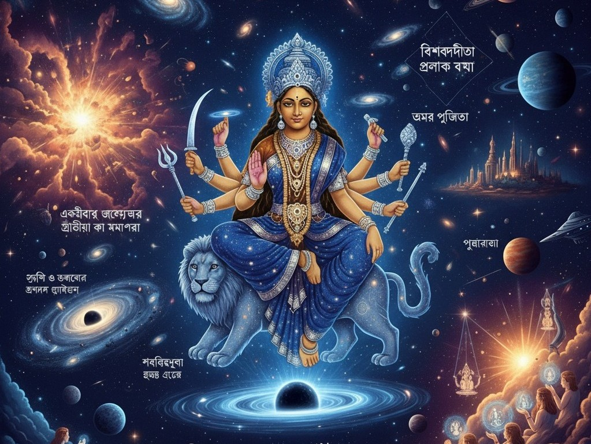

বিশ্বব্রহ্মান্ডময়ীতায়-উমা
"একৈবাহং জগত্যত্র দ্বিতীয়া কা মমাপরা "
এই বিশ্বব্রহ্মাণ্ডের সৃষ্টি কীভাবে সংঘটিত হল এই নিয়ে মানুষের কৌতূহল আজকের নয় বরং আদ্যন্ত কালের অর্থাৎ তার নিজের সৃষ্টির পর জ্ঞানলোক বিকাশের পর থেকে | আধুনিক যুগের বিজ্ঞানের কল্যানে ব্রহ্মান্ড সৃষ্টি র Bigbang Theory কিংবা প্রাণ সৃষ্টির জৈবরসায়নবাদ কে নিয়ে এই কৌতূহলের কিছুটা প্রশমিত হলেও তবুও রয়ে যায় প্রশ্ন যে এসব কোন মহাশক্তির পরিচালনায় সম্ভব বা আমাদের আপাত দৃষ্টির আড়ালে কী কোনো সত্তা এগুলোর নিয়ন্ত্রতা বা স্রষ্টা |
কোন কার্যকরনে র উদ্দীপনায় এ সম্ভব হলো তার কারণ আজ ও মানুষ খুঁজে চলেছে | আসলে সকল প্রশ্নই যেন ব্রহ্মান্ড গোলকে পরিবৃত্ত হয়ে চলেছে এবং সকল প্রশ্নের উত্তরই ঘুরে ফিরে সেই একই আপনায় কেন্দ্রীভূত হয়ে যাচ্ছে যা তৃপ্তি সাধনে অক্ষম | আসলে এর পিছনে রয়েছে এক অরূপ তত্ত্ব | আমরা সকলেই অর্থাৎ এই জগত সংসার তথা বিশ্বব্রহ্মাণ্ড সেই অরূপাশক্তিরূপী বিশ্বব্রহ্মাণ্ড ব্যাপিনি মাতৃ জঠোরের অতলে তল খুঁজে যাচ্ছি | তাই সেই ভবরানির খেলায় আমরা হয়ে চলেছি বিফল | এক নিমেষে সেই সত্তা অসংখ্য ব্রহ্মাণ্ড সৃষ্টি ও ধ্বংসের কার্যক্রমে শক্তিরূপা ব্রহ্মাণ্ড জুড়ে বিরাজ করছে | পুরানে মাতৃ সত্তার আড়ালে উপমায় অসাধারণ ভাবে বর্ণিত হয়েছে এই মাতৃসত্তার এক স্বরূপ ধূমাবতী যার বর্ণনে বলা হল সকলের স্রষ্টারূপ আবার ধ্বংস কর্তা তার পতি তার ক্ষুধা নিবৃত্তি ঘটালো অর্থাৎ তারই মধ্যে সমাহিত হল এখানেই সৃষ্টির আদি তত্ত্বের আভাস স্পষ্টতই পাওয়া যায়। সকলেই নিরাকার অপারা তারই বারংবার ছলনা বলে পারার মধ্যে সমাহিত হচ্ছে সৃষ্টি হচ্ছে অনন্ত কোটি ব্রহ্মাণ্ড |
হয়তো সেই চালনা শক্তির ইচ্ছাতেই সেই নিরাকার সাকারের গণ্ডিতে নিজেকে নানা রূপে আবদ্ধ করে আমাদের কাছে ধরা দেয় |এ যেন তার বিশালত্বকে ভুলে থাকার চেষ্টা | বর্তমানে আমাদের এই দেবী বন্দনা তার উদাহরণস্বরূপ | ভবিষ্যতে তাই এই অপার শক্তি চিরন্তন হবে রয়ে যাবে এবং নতুন নতুন পন্থায় ব্রহ্মাণ্ডে আমাদের কাছে ধরা দেবেন এবং তিনি বন্দিতা হবেন নানাভাবে নানারকমে নানা প্রকারে অভূতপূর্ব সম্মেলনে তার বন্দনা হবে এই পৃথিবীর গন্ডি পেরিয়ে অরূপের অন্তরালে | তিনি নিজেকে এই যাবতীয় গন্ডীতে সীমাবদ্ধ না করে নিজের পরিধি নিজেই যে বাড়াবেন এ বিষয়ে কোনো সন্দেহের অবকাশ থাকে না | ভবিষ্যতে হয় তো সকল গ্রহ-নক্ষত্র রুপি তার সৃষ্টি সেই স্রষ্টা রূপ সর্বব্যাপীতা মহামায়া বন্দনায় নিজেদের সমাহিত করবে | যিনি অনন্ত কোটি নক্ষত্র সৃষ্টি ও ধ্বংস করতে সক্ষম তিনি অনন্ত হয়ে তাদের মাঝে বিরাজিত হবেন, গ্রহণ করবেন তাদের দেওয়া অর্ঘ্য | আমাদের পরবর্তী প্রজন্ম প্রযুক্তি অন্তরালে আধুনিকতার যুগে তার ইচ্ছায় তার কোন এক অংশকে উপলব্ধি করতে সক্ষম হবে divine entity রুপে ব্রহ্মাণ্ডের মাঝে | হয়তো সেই পরমশক্তি অচলা হয়ে ধরা দেবে তাদের কাছে অনন্যা হয়ে অন্যন্য ভাবে চা আজ আমাদের হয়তো কল্পনার অতীত | ঠাকুরের কথায় তিনি "বিশ্ববন্দীতা ত্রিলোক ধন্যা " রূপে "অমর পূজিতা" হবেন সৃষ্টির অন্তরালে অথচ সৃষ্টি সত্তার মধ্যে | বিশ্বালয়ে খেলিতে খেলিতে তিনি বিশ্বজোড়া য় পূজিত হবেন |
← Back to This Year’s Articles